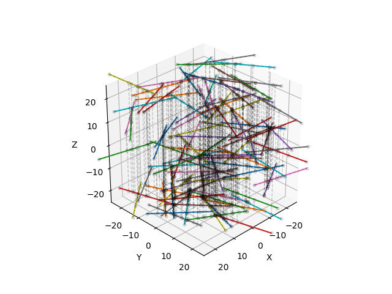
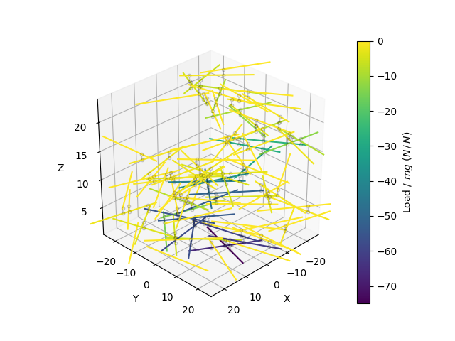

🕸️ Net(work)
Net
{kind=link}
- class fibermat.net.Net(*args, **kwargs)
A class inherited from pandas.DataFrame to build a fiber network. It describes nodes and connections between fibers within a
Matobject:nodes are defined as the nearest points between pairs of fibers.
connections link pairs of nodes to define relative positions between fibers.
Parameters
- matpandas.DataFrame, optional
Set of fibers represented by a
Matobject.
Note
The constructor calls
init()method if the object is instantiated with parameters. Otherwise, initialization is performed with the pandas.DataFrame constructor.- Use:
>>> # Generate a set of fibers >>> mat = Mat(100) >>> # Build the fiber network >>> net = Net(mat) >>> net A B sA sB xA yA zA xB yB zB 0 0 0 12.500000 -12.500000 6.057752 20.856058 -24.338157 -1.176401 -3.074404 -24.338157 1 0 2 3.938063 -1.799582 3.580217 12.660413 -24.338157 3.580217 12.660413 -23.967450 2 0 3 6.509881 8.253676 4.324414 15.122205 -24.338157 4.324414 15.122205 -23.766064 3 0 5 0.269800 -7.165082 2.518746 9.149084 -24.338157 2.518746 9.149084 -21.802237 4 0 6 -10.466114 6.264470 -0.587864 -1.127531 -24.338157 -0.587864 -1.127531 -21.637518 .. .. .. ... ... ... ... ... ... ... ... 862 95 95 12.500000 -12.500000 -14.234141 11.919304 23.096819 -17.446723 -12.873423 23.096819 863 96 96 12.500000 -12.500000 15.557356 -19.115497 23.645974 -6.906063 -8.143040 23.645974 864 97 97 12.500000 -12.500000 -12.739951 -17.721142 23.874757 -35.249295 -6.843209 23.874757 865 98 98 12.500000 -12.500000 17.087939 -34.582099 24.091469 15.806064 -9.614985 24.091469 866 99 99 12.500000 -12.500000 -17.894817 -13.721749 24.516947 -31.635635 7.163412 24.516947 [867 rows x 10 columns]
Data
- indexpandas.Index
Connection label. Each label refers to a unique connection.
- Pair of fibers:
- Apandas.Series
First fiber label. It must satisfy net.A ≤ net.B.
- Bpandas.Series
Second fiber label. It must satisfy net.A ≤ net.B.
- Curvilinear abscissa:
- sApandas.Series
Curvilinear abscissa of node along the first fiber (mm).
- sBpandas.Series
Curvilinear abscissa of node along the second fiber (mm).
- Relative node positions:
- xApandas.Series
X-coordinate of node along the first fiber (mm).
- yApandas.Series
Y-coordinate of node along the first fiber (mm).
- zApandas.Series
Z-coordinate of node along the first fiber (mm).
- xBpandas.Series
X-coordinate of node along the second fiber (mm).
- yBpandas.Series
Y-coordinate of node along the second fiber (mm).
- zBpandas.Series
Z-coordinate of node along the second fiber (mm).
Attributes
attrs:Global attributes of DataFrame.
Methods
- property attrs
- Global attributes of DataFrame:
- nint
Number of fibers. By default, it is empty (n = 0).
- sizefloat
Box dimensions (mm). By default, the domain is a 50 mm square cube.
- periodicbool
Boundary periodicity. By default, the domain is periodic.
- static check(net=None)
Check that a
Netobject is defined correctly.This method is automatically called by functions that use a
Netobject as input.Parameters
- netpandas.DataFrame, optional
Fiber network represented by a
Netobject.
Raises
- KeyError
If any keys are missing from the columns of
Netobject.- AttributeError
If any attributes are missing from the dictionary
attrs.- IndexError
- If row indices are incorrectly defined:
Row indices are not unique in [0, …, m-1] where m is the number of connections.
Connection labels are not sorted.
- TypeError
If labels are not integers.
- ValueError
- If any of the following conditions are not met:
Fiber labels are incorrect.
There are duplicate connections.
Fiber labels are not ordered.
Returns
- netpandas.DataFrame
Validated
Netobject.
- static init(mat=None, periodic=True, pairs=None, **kwargs)
Build a fiber network.
Parameters
- matpandas.DataFrame, optional
Set of fibers represented by a
Matobject.
Returns
- netpandas.DataFrame
Initialized
Netobject.
Other Parameters
- periodicbool, optional
If True, duplicate fibers for periodicity. Default is True.
- pairsnumpy.ndarray, optional
Pairs of fiber indices used to find nearest points. Size: (m x 2).
- kwargs :
Additional keyword arguments ignored by the function.
Example
import numpy as np
from matplotlib import pyplot as plt
from tqdm import tqdm
from fibermat import *
# Generate a set of fibers
mat = Mat(100)
# Build the fiber network
net = Net(mat, periodic=False)
# Get node data
pairs = net[[*"AB"]].values # size: (n x 2)
abscissa = net[["sA", "sB"]].values.reshape(-1, 2, 1) # size: (n x 2 x 1)
points = (net[["xA", "yA", "zA", "xB", "yB", "zB"]]
.values.reshape(-1, 2, 3)) # size: (n x 2 x 3)
# Check data
Net.check(net) # or `net.check()`
# -> returns `net` if correct, otherwise it raises an error.
# Figure
fig, ax = plt.subplots(subplot_kw=dict(projection='3d', aspect='equal',
xlabel="X", ylabel="Y", zlabel="Z"))
ax.view_init(azim=45, elev=30, roll=0)
if len(mat):
# Draw fibers
for i in tqdm(range(len(mat))):
# Get fiber data
fiber = mat.iloc[i]
# Calculate fiber end points
A = fiber[[*"xyz"]].values - 0.5 * fiber.l * fiber[[*"uvw"]].values
B = fiber[[*"xyz"]].values + 0.5 * fiber.l * fiber[[*"uvw"]].values
plt.plot(*np.c_[A, B])
if len(net):
# Draw nodes
for point in tqdm(points):
plt.plot(*point.T, '--ok', lw=1, mfc='none', ms=3, alpha=0.2)
# Set drawing box dimensions
ax.set_xlim(-0.5 * net.attrs["size"], 0.5 * net.attrs["size"])
ax.set_ylim(-0.5 * net.attrs["size"], 0.5 * net.attrs["size"])
plt.show()
Stack
{kind=link}
- class fibermat.net.Stack(*args, **kwargs)
A class inherited from
Netto stack a set of fibers. It solves the linear programming system:\[\min_{z} (-\mathbf{f} \cdot \mathbf{z}) \quad s.t. \quad \mathbb{C} \, \mathbf{z} \leq \mathbf{H} \quad and \quad \mathbf{z} \geq \mathbf{h} / 2\]\[with \quad \mathbf{f} = -\mathbf{m} \, g \quad and \quad \mathbf{h} > 0\]- where:
\(\mathbf{f}\) is the vector of fiber weights (with \(\mathbf{m}\) fiber masses, \(g\): gravity).
\(\mathbf{z}\) is the unknown vector of fiber vertical positions.
\(\mathbf{h}\) is the vector of fiber thicknesses.
\(\mathbb{C}\) is the matrix of inequality constraints that positions must satisfy to prevent the fibers from crossing each other.
\(-\mathbf{H}\) corresponds to the minimum distances between the pairs of fibers.
Non-penetration conditions between two fibers give the expressions of rows of \(\mathbb{C}\) and \(\mathbf{H}\):
\[z_B - z_A \geq (h_A + h_B) \, / \, 2 \quad \Leftrightarrow \quad z_A - z_B \leq - (h_A + h_B) \, / \, 2\]Parameters
- matpandas.DataFrame, optional
Set of fibers represented by a
Matobject.- netpandas.DataFrame, optional
Fiber network represented by a
Netobject.
Note
The constructor calls
init()method if the object is instantiated with parameters. Otherwise, initialization is performed with the pandas.DataFrame constructor.- Use:
>>> # Generate a set of fibers >>> mat = Mat(100) >>> # Build the fiber network >>> net = Net(mat) >>> # Stack fibers >>> stack = Stack(mat, net) >>> stack A B sA sB xA yA zA xB yB zB 0 0 0 12.500000 -12.500000 6.057752 20.856058 0.5 -1.176401 -3.074404 0.5 1 0 2 3.938063 -1.799582 3.580217 12.660413 0.5 3.580217 12.660413 1.5 2 0 3 6.509881 8.253676 4.324414 15.122205 0.5 4.324414 15.122205 2.5 3 0 5 0.269800 -7.165082 2.518746 9.149084 0.5 2.518746 9.149084 1.5 4 0 6 -10.466114 6.264470 -0.587864 -1.127531 0.5 -0.587864 -1.127531 1.5 .. .. .. ... ... ... ... ... ... ... ... 862 95 95 12.500000 -12.500000 -14.234141 11.919304 27.5 -17.446723 -12.873423 27.5 863 96 96 12.500000 -12.500000 15.557356 -19.115497 27.5 -6.906063 -8.143040 27.5 864 97 97 12.500000 -12.500000 -12.739951 -17.721142 27.5 -35.249295 -6.843209 27.5 865 98 98 12.500000 -12.500000 17.087939 -34.582099 27.5 15.806064 -9.614985 27.5 866 99 99 12.500000 -12.500000 -17.894817 -13.721749 26.5 -31.635635 7.163412 26.5 [867 rows x 10 columns]
Data
- indexpandas.Index
Connection label. Each label refers to a unique connection.
- Pair of fibers:
- Apandas.Series
First fiber label. It must satisfy net.A ≤ net.B.
- Bpandas.Series
Second fiber label. It must satisfy net.A ≤ net.B.
- Curvilinear abscissa:
- sApandas.Series
Curvilinear abscissa of node along the first fiber (mm).
- sBpandas.Series
Curvilinear abscissa of node along the second fiber (mm).
- Relative node positions:
- xApandas.Series
X-coordinate of node along the first fiber (mm).
- yApandas.Series
Y-coordinate of node along the first fiber (mm).
- zApandas.Series
Z-coordinate of node along the first fiber (mm).
- xBpandas.Series
X-coordinate of node along the second fiber (mm).
- yBpandas.Series
Y-coordinate of node along the second fiber (mm).
- zBpandas.Series
Z-coordinate of node along the second fiber (mm).
Attributes
attrs:Global attributes of DataFrame.
Methods
init():Stack fibers by gravity.
check():Check that a
Stackobject is defined correctly.solve():Solve the stacking problem.
constraint():Assemble the linear system.
- property attrs
- Global attributes of DataFrame:
- nint
Number of fibers. By default, it is empty (n = 0).
- sizefloat
Box dimensions (mm). By default, the domain is a 50 mm square cube.
- periodicbool
Boundary periodicity. By default, the domain is periodic.
- static check(stack=None)
Check that a
Stackobject is defined correctly.This method is automatically called by functions that use a
Stackobject as input.Parameters
- stackpandas.DataFrame, optional
Fiber stack represented by a
Stackobject.
Raises
- KeyError
If any keys are missing from the columns of
Stackobject.- AttributeError
If any attributes are missing from the dictionary
attrs.- IndexError
- If row indices are incorrectly defined:
Row indices are not unique in [0, …, m-1] where m is the number of connections.
Connection labels are not sorted.
- TypeError
If labels are not integers.
- ValueError
- If any of the following conditions are not met:
Fiber labels are incorrect.
There are duplicate connections.
Fiber labels are not ordered.
Returns
- stackpandas.DataFrame
Validated
Stackobject.
- static constraint(mat=None, net=None)
Assemble the linear system:
\[\min_{z} (-\mathbf{f} \cdot \mathbf{z}) \quad s.t. \quad \mathbb{C} \, \mathbf{z} \leq \mathbf{H} \quad and \quad \mathbf{z} \geq \mathbf{h} / 2\]\[with \quad \mathbf{f} = -\mathbf{m} \, g \quad and \quad \mathbf{h} > 0\]Parameters
- matpd.DataFrame, optional
Set of fibers represented by a
Matobject.- netpd.DataFrame, optional
Fiber network represented by a
Netobject.
Returns
- Csparse matrix
Constraint matrix.
- fnumpy.ndarray
Force vector.
- Hnumpy.ndarray
Upper-bound vector.
- hnumpy.ndarray
Thickness vector.
- static init(mat=None, net=None, threshold=None, **kwargs)
Stack fibers by gravity.
Parameters
- matpandas.DataFrame, optional
Set of fibers represented by a
Matobject.- netpandas.DataFrame, optional
Fiber network represented by a
Netobject.
Returns
- stackpandas.DataFrame
Initialized
Stackobject.
Other Parameters
- thresholdfloat, optional
Threshold distance value for proximity detection (mm).
- kwargs :
Additional keyword arguments ignored by the function.
Warning
Matobject is modified during execution.
- static solve(mat=None, net=None)
Solve the stacking problem.
Parameters
- matpandas.DataFrame, optional
Set of fibers represented by a
Matobject.- netpandas.DataFrame, optional
Fiber network represented by a
Netobject.
Returns
- linsolOptimizeResult
Results of linear programming solver.
See also
The solver is based on scipy.optimize.linprog.
Example
import numpy as np
from matplotlib import pyplot as plt
from scipy.interpolate import interp1d
from tqdm import tqdm
from fibermat import *
# Generate a set of fibers
mat = Mat(100)
# Build the fiber network
net = Net(mat, periodic=False)
# Stack fibers
stack = Stack(mat, net)
# Get the linear system
C, f, H, h = Stack.constraint(mat, net)
linsol = Stack.solve(mat, net)
# Contact force
force = linsol.ineqlin.marginals
# Resulting force
load = 0.5 * force @ np.abs(C) + 0.5 * force @ C
# Check data
Stack.check(stack) # or `stack.check()`
# -> returns `stack` if correct, otherwise it raises an error.
# Normalize by fiber weight
load /= np.pi / 4 * mat[[*"lbh"]].prod(axis=1).mean()
# Get loaded nodes
points = (stack[stack.A < stack.B][["xA", "yA", "zA", "xB", "yB", "zB"]]
.values.reshape(-1, 2, 3))
# Prepare color scale
cmap = plt.cm.viridis
color = interp1d([np.min(load), np.max(load)], [0, 1])
# Figure
fig, ax = plt.subplots(subplot_kw=dict(projection='3d', aspect='equal',
xlabel="X", ylabel="Y", zlabel="Z"))
ax.view_init(azim=45, elev=30, roll=0)
if len(mat):
# Draw fibers
for i in tqdm(range(len(mat))):
# Get fiber data
fiber = mat.iloc[i]
# Calculate fiber end points
A = fiber[[*"xyz"]].values - 0.5 * fiber.l * fiber[[*"uvw"]].values
B = fiber[[*"xyz"]].values + 0.5 * fiber.l * fiber[[*"uvw"]].values
plt.plot(*np.c_[A, B], c=cmap(color(load[i])))
if len(points):
# Draw contacts
for point in tqdm(points[~np.isclose(force, 0)]):
plt.plot(*point.T, '--ok', lw=1, mfc='none', ms=3, alpha=0.2)
# Set drawing box dimensions
ax.set_xlim(-0.5 * mat.attrs["size"], 0.5 * mat.attrs["size"])
ax.set_ylim(-0.5 * mat.attrs["size"], 0.5 * mat.attrs["size"])
# Add a color bar
norm = plt.Normalize(vmin=np.min(load), vmax=np.max(load))
smap = plt.cm.ScalarMappable(cmap=cmap, norm=norm)
cbar = plt.colorbar(smap, ax=ax)
cbar.set_label("Load / $mg$ ($N\,/\,N$)")
plt.show()